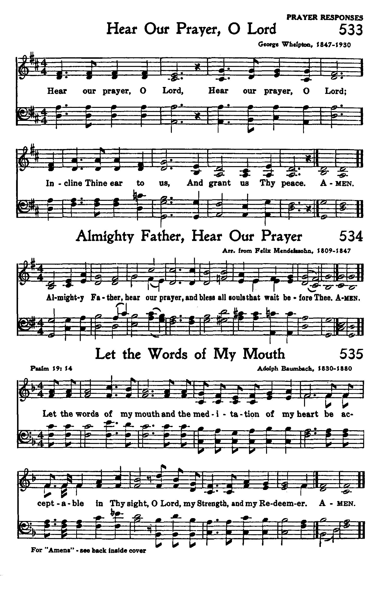
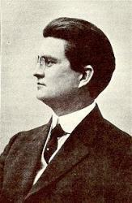

|
|
|
|
1. Hear ye the Master’s call, “Give Me thy best!” Refrain: 2. Wait not for men to laud, heed not their slight; 3. Night soon comes on apace, day hastens by; |
433献上最美
1.请听救主呼声「献上最美！」
处卑微或升高，主自分配。 尽你才力所能，不为求赏， 祇求为恩主不求人称扬。 凡为耶稣作的都蒙福， 但主要各人全力以赴， 我才力虽微小，不足称道， 祇求尽心、尽意、尽力、爱主。 2.不理会人称赞或是怠慢， 但求父神喜悦使父心欢！ 凡事求善求真，必蒙恩福， 不论工作、思想全力以赴。 凡为耶稣作的都蒙福， 但主要各人全力以赴， 我才力虽微小，不足称道， 祇求尽心、尽意、尽力、爱主。 3.黑夜迅速过去，时日似箭，
|
|
https://www.mred365.cn/szxg/7436.html
 |
|
|
|
|

-

獻上最美 181202早堂中級青年詩班 https://youtu.be/lw8qrA1BZYQ Hear Ye the Master's Call (Our Best) https://youtu.be/NyXPFlPlWI4 - Our Best, Hymn (Lyric Video) (Lower, Key of G)
https://youtu.be/FELTOXbporM
| Text: | Our Best |
| Author: | S. C. Kirk, 20th Century |
| Tune: | [Hear ye the Master's call] |
| Composer: | Grant C. Tullar, 1869-1950 |
| Short Name: | Salathiel Cleaver Kirk |
| Full Name: | Kirk, Salathiel Cleaver, 1847-1917 |
| Birth Year (est.): | 1847 |
| Death Year (est.): | 1917 |
Born: Circa 1847, Near
Philadelphia, Pennsylvania.
Died: Circa 1917, Philadelphia, Pennsylvania.
Kirk’s works include:
Musings Along the Way
--www.hymntime.com/tch
Tune Information
| Title: | TULLAR (Tullar 54435) |
| Composer: | Grant Colfax Tullar |
| Meter: | 10.10.10.10 with refrain |
| Incipit: | 54435 11765 57665 |
| Key: | B♭ Major |
| Copyright: | Public Domain |
| Short Name: | Grant Colfax Tullar |
| Full Name: | Tullar, Grant Colfax, 1869-1950 |
| Birth Year: | 1869 |
| Death Year: | 1950 |
Grant Colfax Tullar

was born August 5, 1869, in Bolton, Connecticut. He was named after the American President Ulysses S. Grant and Vice President Schuyler Colfax. After the American Civil War, his father was disabled and unable to work, having been wounded in the Battle of Antietam. Tullar's mother died when he was just two years old so Grant had no settled home life until he became an adult. Yet from a life of sorrow and hardship he went on to bring joy to millions of Americans with his songs and poetry.
As a child, he received virtually no education or religious training. He worked in a woolen mill and as a shoe clerk. The last Methodist camp meeting in Bolton was in 1847. Tullar became a Methodist at age 19 at a camp meeting near Waterbury in 1888.
He then attended the Hackettstown Academy in New Jersey. He became an ordained Methodist minister and pastored for a short time in Dover, Delaware. For 10 years he was the song leader for evangelist Major George A. Hilton. Even so, in 1893 he also helped found the well-known Tullar-Meredith Publishing Company in New York, which produced church and Sunday school music. Tullar composed many popular hymns and hymnals.
His works include: Sunday School Hymns No. 1 (Chicago, Illinois: Tullar Meredith Co., 1903) and The Bible School Hymnal (New York: Tullar Meredith Co., 1907). One of Grant Tullar's most quoted poems is "The Weaver":
Words: Salathial Cleaver Kirk (b. circa 1847; d. circa
1917)
Music: Grant Colfax Tullar (b. Aug. 5, 1869; d. May 20,
1950)
Links:
Wordwise Hymns (Grant
Tullar)
The Cyber
Hymnal
Hymnary.org
Note:
This gospel song was published in 1912. It’s interesting that Kirk, who lived in the Philadelphia area, has remained so obscure. The Cyber Hymnal lists 75 of his songs, yet we know little about him. Only that he was one of a number of writers who sent poetry to Grant Tullar to be set to music. Interestingly, Mr. Kirk’s first name is actually found in the Bible (sometimes written as Shealtiel), and it means asked of God. The biblical Shealtiel is found in the earthly family line of Jesus (Matt. 1:12).
CH-1) Hear ye the Master’s call, “Give Me thy best!”
For, be it great or small, that is His test.
Do then the best you can, not for reward,
Not for the praise of men, but for the Lord.
Every work for Jesus will be blest,
But He asks from everyone his best.
Our talents may be few, these may be small,
But unto Him is due our best, our all.
We live in a competitive society. What is deemed to be “the best” is praised, and sought after. The best movie, the best football team, the best student, the best pizza. Top Ten lists abound, marking the biggest, the fastest, the most expensive, and so on.
So what’s the Bible’s best? It comes not from us, but from the Lord. There we discover God and His saving work, worthy of many superlatives. A well known verse declares, “God so loved the world that He gave His only begotten Son, that whoever believes in Him should not perish but have everlasting life” (Jn. 3:16). That speaks of the best love of all, described this way in the expanded version of the Amplified Bible: “God so greatly loved and dearly prized the world.”
That is God’s best for us. As to this song’s use of the word “best,” I find myself of two minds. On the one hand, God’s gift of His best surely calls for our best in return. Not to earn our salvation, but in response to what God has done with “so great a salvation” (Heb. 2:3). But when we try to line up Kirk’s thoughts with the Word of God, there is little that fits. In Psalms, the word starkly describes how very weak and limited we are. “Certainly every man at his best state is but vapour. Selah [Think of that!]” (Ps. 39:5).
The word “best” is actually used in the NKJV 41 times. But by far the most of those refer to those who are selfish and self-serving, keeping the best for themselves. Several times the Lord condemns the Jewish leaders for seeking the “best seats” at feasts, or in the synagogue (cf. Matt. 23:6; Lk. 11:43).
Where it is used in a way that perhaps is similar to what we find in the song is in the Lord’s instruction that the Israelites present the very best as an offering (Num. 18:12, 19; Ezek. 44:30). But again, these animals pictured Christ, not us. And they are external things that can be evaluated by a generally recognized standard. The best sheep, or the best wheat, after all, is something quite different from the best of my devotion, or the best of my mental powers. Who can objectively evaluate that? Not me.
And surely we must reject the claim in the final stanza that the blessed rest of heaven will be granted to “those who do their best.” Where is the Bible verse in which God “promises” this? Kirk seems to come close to offering a salvation by works–which would be heresy! Maybe a last line that said, “After we’ve given Him our very best” would be an improvement.
CH-3) Night soon comes on apace, day hastens by;
Workman and work must face testing on high.
Oh, may we in that day find rest, sweet rest,
Which God has promised those who do their best.
My place in the eternal kingdom is secure because heaven’s Best came to this earth to die for my sins (Jn. 3:16). On that I rest my eternal future. The prodigal son had not done his “best” to earn his father’s favour. It’s by his love and grace toward his son that the father (a picture, surely, of God the Father) called, “Bring out the best robe and put it on him” (Lk. 15:22).
As to Christian service, it’s perhaps a little easier to think of giving our all, rather than trying to evaluate whether it’s “best” or not. By God’s grace, and in grateful response to what He has done for us, we are to offer to Him all that we are and have (Rom. 12:1). Leave it to the Lord to evaluate its quality. Of the widow who put two small coins in the temple treasury (Mk. 12:42), Jesus said, “They all put in out of their abundance, but she out of her poverty put in all that she had, her whole livelihood” (vs. 44). Of the woman who anointed Jesus with costly oil (Mk. 14:3), He said, “She has done what she could” (vs. 8). That is a clearer measure in my view.
Questions:
1) What is your own evaluation of this hymn? Is it one you would use?
2) By what standard do you evaluate your own Christian service?
Links:
Wordwise Hymns (Grant
Tullar)
The Cyber
Hymnal
Hymnary.org
https://wordwisehymns.com/2015/06/22/our-best/